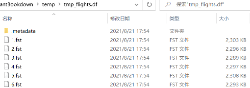
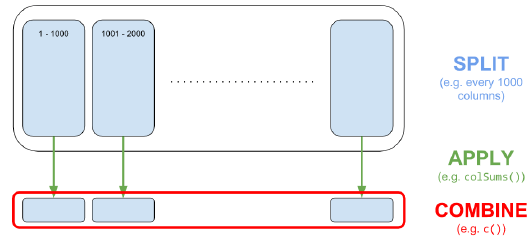

F R 与高性能计算
R 代码具有较高的开发效率，但在计算密集型任务或超大数据场景中需要专门的提速方法。本附录按照教材介绍并行计算、调用 C++、处理超出内存容量的数据集，以及大型矩阵运算。
F.1 并行计算
future 为 R 提供统一的并行与分布式计算接口。
Code
library(future)
# 查看当前环境可用的处理核心数
availableCores()
#> system
#> 10
# 启用多会话并行；这里使用 2 个工作进程，避免占满课堂电脑
plan(multisession, workers = 2)
# 把需要并行执行的表达式放入 future()
# 这里以计算 iris 花萼长度均值为例
f <- future({
mean(iris$Sepal.Length)
})
# 等待并取得并行计算结果
value(f)
#> [1] 5.843333
# 使用完毕后恢复顺序执行
plan(sequential)furrr 为 purrr 的映射函数提供并行版本，只需给函数名增加 future_ 前缀。
Code
library(furrr)
library(purrr)
# 启用 2 个工作进程
plan(multisession, workers = 2)
# 并行计算 iris 前四列的均值
future_map_dbl(iris[1:4], mean)
#> Sepal.Length Sepal.Width Petal.Length Petal.Width
#> 5.843333 3.057333 3.758000 1.199333
# 结束后释放并行工作进程
plan(sequential)F.2 运行 C++ 代码
把耗时的 R 函数改写为 C++，可以通过 Rcpp 在 R 中编译调用。Windows 需要 Rtools，macOS 需要 Xcode Command Line Tools，Linux 可安装 r-base-dev。
Code
library(Rcpp)
# 在 R 代码块中定义并编译一个 C++ 加法函数
cppFunction('
int add(int x, int y) {
int sum = x + y;
return sum;
}
')
# 像普通 R 函数一样调用编译后的函数
add(1, 2)
#> [1] 3也可以把以下代码保存为 code/appendix-f-mean.cpp，再用 sourceCpp() 编译运行：
Code
#include <Rcpp.h>
using namespace Rcpp;
// [[Rcpp::export]]
double meanC(NumericVector x) {
int n = x.size();
double total = 0;
for (int i = 0; i < n; ++i) {
total += x[i];
}
return total / n;
}
/*** R
# 固定随机种子，使两种均值函数处理完全相同的数据
set.seed(123)
x <- runif(1e5)
# 先核对两种函数的计算结果
mean(x)
meanC(x)
# 比较运行速度，并检查两种表达式的结果是否一致
bench::mark(mean(x), meanC(x), check = TRUE)[, 1:6]
*/Code
# 编译并运行上面的 C++ 文件
# 文件中的 /*** R 区块会在编译完成后自动执行
Rcpp::sourceCpp("code/appendix-f-mean.cpp")
#>
#> > set.seed(123)
#>
#> > x <- runif(1e+05)
#>
#> > mean(x)
#> [1] 0.4992992
#>
#> > meanC(x)
#> [1] 0.4992992
#>
#> > bench::mark(mean(x), meanC(x), check = TRUE)[, 1:6]
#> # A tibble: 2 × 6
#> expression min median `itr/sec` mem_alloc `gc/sec`
#> <bch:expr> <bch:tm> <bch:tm> <dbl> <bch:byt> <dbl>
#> 1 mean(x) 243µs 244µs 4041. 0B 0
#> 2 meanC(x) 121µs 121µs 8118. 5.74KB 0两种均值函数应给出完全相同的数值。基准测试中的具体时间取决于电脑，但 meanC() 在本次测试中运行更快。
F.3 处理超出内存容量的数据集
若数据仍可放入内存，教材建议优先使用 data.table。当数据超出内存但未超过硬盘容量时，disk.frame 可以把数据分块存储到硬盘，并使用类似 dplyr 的语法操作。
disk.frame 已从 CRAN 主仓库归档，并在启动信息中标记为 soft-deprecated。下面仍保留并实跑教材示例；当前环境使用的是经过 R 4.6 兼容处理的归档版 0.8.3，分块、筛选与收集逻辑均保持不变。
Code
library(disk.frame)
# 启用 2 个工作进程，并允许进程之间传递较大的对象
setup_disk.frame(workers = 2)
options(future.globals.maxSize = Inf)
# 把教材使用的航班数据转换为硬盘分块对象
flights <- as.disk.frame(
nycflights13::flights,
outdir = tempfile(fileext = ".df"),
overwrite = TRUE
)
# 输出分块数、行数和列数，确认硬盘数据集创建成功
tibble::tibble(
数据块数 = nchunks(flights),
行数 = nrow(flights),
列数 = ncol(flights)
)
Figure F.1: disk.frame 分割后的数据集
disk.frame 使用懒惰计算，调用 collect() 后才真正执行并把结果取回内存。
Code
flight_result <- flights |>
# 筛选指定日期与航空公司
filter(
month == 5,
day == 17,
carrier %in% c("UA", "WN", "AA", "DL")
) |>
# 保留分析所需字段
select(carrier, dep_delay, air_time, distance) |>
# 将飞行时间由分钟换算为小时
mutate(air_time_hours = air_time / 60) |>
# 执行计算并把结果读回内存
collect() |>
# 排序应放在 collect() 之后
arrange(carrier) |>
head()
# 显示教材中的前 6 行结果
flight_resultCode
# 删除本示例产生的临时硬盘数据，并恢复顺序执行
invisible(disk.frame::delete(flights))
future::plan(future::sequential)真正的多机分布式计算，可以使用 sparklyr 连接 Apache Spark。
F.4 大型矩阵运算
bigstatsr 的 FBM（文件后端大矩阵）把数据存储在硬盘上，通过内存映射访问。big_apply() 采用“分割—应用—合并”机制，并支持并行计算。

Figure F.2: 大型矩阵的“分割—应用—合并”机制
Code
library(bigstatsr)
# 固定随机种子，使列和结果可以重复得到
set.seed(123)
# 创建教材使用的临时目录，并清理可能残留的旧后端文件
dir.create("temp", showWarnings = FALSE)
unlink(c("temp/test.bk", "temp/test.rds"))
# 创建 10000 × 1000 的文件后端大矩阵
X <- FBM(
10000,
1000,
init = rnorm(10000 * 1000),
backingfile = "temp/test"
)
# 比较 R 对象本身与硬盘后端文件的大小
object.size(X)
#> 680 bytes
file.size(X$backingfile)
#> [1] 8e+07
typeof(X)
#> [1] "double"
# 每 500 列为一块，使用 2 个核心计算各列之和
sums <- big_apply(
X,
a.FUN = function(X, ind) {
colSums(X[, ind])
},
a.combine = "c",
block.size = 500,
ncores = 2
)
# 显示前 5 列的列和
sums[1:5]
#> [1] -23.71702 -91.06453 -70.99410 -52.44761 151.04126
# 删除示例产生的 80 MB 后端文件，避免污染课程项目
unlink(c(X$backingfile, sub("\\.bk$", ".rds", X$backingfile)))bigstatsr 还提供大规模回归、SVD、矩阵乘法、转置、读写和列统计等函数。